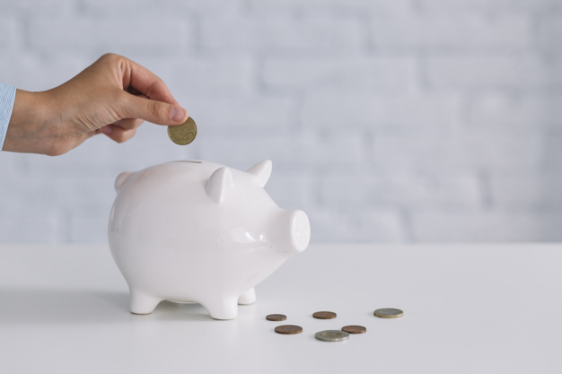

<!DOCTYPE html>
<html>
    <head>
        <title>My experiment</title>
        <script src="jspsych-6.1.0/jspsych.js"></script>
        <script src="jspsych-6.1.0/plugins/jspsych-fullscreen.js"></script>
        <script src="jspsych-6.1.0/plugins/jspsych-html-keyboard-response.js"></script>
        <script src="jspsych-6.1.0/plugins/jspsych-html-button-response.js"></script>
        <script src="jspsych-6.1.0/plugins/jspsych-instructions.js"></script>
        <script src="jspsych-6.1.0/plugins/jspsych-free-text-response.js"></script>
        <link href="jspsych-6.1.0/css/jspsych.css" rel="stylesheet" type="text/css"></link>
    </head>
    <style>
      .topleft {
        position: absolute;
        top: 5%;
        left: 5%;
      }

      .topright {
        position: absolute;
        top: 5%;
        right: 5%;
      }

      .topcentre {
        position: absolute;
        margin-left: auto;
        margin-right: auto;
        left: 0%;
        right: 0%;
        top: 15%;
      }

      .inputbox {
        height: 40px;
        width: 300px;
        font-size: 30px;
      }

      ul {
        list-style-position: inside;
      }

    </style>
    <body></body>
    <script>

    /* create timeline */
    var timeline = [];

    /* experiment parameters */

      // initial parameters
    var score = 0;
    var savings = 0;
    var month = 1;

      // common parameters
    var savings_per_round = 500;
    var reward_rate = 400;

      // practice stage parameters
    var n_practice_rounds = 3;
    var emergency_cost_p = 500;

      // exp stage parameters
    var n_exp_rounds = 5;
    var emergency_cost_e = 3000;

      // points conversion rate
    conversion = function(amount_spent) {

      if (amount_spent <= 250) {
        points = amount_spent
      } else if (amount_spent <= 750) {
        points = ((Math.pow(amount_spent, 2)) - (3000 * amount_spent) + 562500) / -500
      } else if (amount_spent <= 5000) {
        points = ((11 * (Math.pow(amount_spent, 2))) - (110000 * amount_spent) - 86250000) / -72250
      } else if (amount_spent > 5000) {
        points = amount_spent
      }
      return(Math.round(points))
    }

    /* open in fullscreen */
    var fullscreenOn = {
      type: 'fullscreen',
      fullscreen_mode: true,
      message: function() {
        return '<h1>Financial Decision-Making Task</h1>' +
        '<br><p></img></p>'
      },
      button_label: 'Begin the experiment!',
      delay_after: 200
    }

    /* instructions stage */
    var instructions_1 = 'Welcome to the experiment.' +
    '<p>In this experiment, you will play a financial decision-making game.</p>' +
    '<p>Click the <b>NEXT</b> button or use the arrow keys to continue.</p>'

    var instructions_2 = 'You have started a new job that provides you with a monthly income.' +
    '<p>Each month, after covering your expenses, you are left with a disposable income of $500.</p>'

    var instructions_3 = 'You decide that you want to start savings towards a goal.' +
    '<p>Your goal is to have $6,000 saved after 30 months.</p>'

    var instructions_4 = 'Each month, you will be asked to decide how much of your money to spend and save.' +
    '<p>Your objective in this game is to manage your spending and saving behaviour to score as many points as possible.</p>' +
    '<br>You can earn points in two ways.' +
    '<p><b>Spending:</b> You will be rewarded with 5 points for every $1 that you spend.</p>' +
    '<p><b>Saving:</b> If you reach your savings goal, you will be rewarded with 30,000 bonus points. Otherwise, you will receive no bonus points.</p>' +
    '<br>Once the experiment has been completed, the top 20% highest scoring participants will receive a $20 reward.' +
    '<br> '

    var instructions_5 =
    '<p>Your savings balance will be tracked in the top left corner of the screen.</p>' +
    '<div id="jspsych-survey-text-custom-topleft" class="topleft"><font size="6" color="red"><b>Savings: $'+savings+'</b></font></div>' +
    '<p>Your points total will be tracked in the top right corner of the screen.</p>' +
    '<div id="jspsych-survey-text-custom-topright" class="topright"><font size="6" color="red"><b>Score: '+score+' points</b></font></div>'

    var instructions_6 = '<b><u>Summary</u></b>' +
    '<p>You will receive $500 each month that can be spent or saved.</p>' +
    '<p>Your savings goal is to have saved $6,000 after 30 rounds.</p>' +
    '<p>Every $1 that you spend will earn 5 points.</p>' +
    '<p>Reaching your savings goal will earn a bonus 30,000 points. Not reaching it will earn no bonus points.</p>' +
    '<p>Your objective is to score as many points as possible.</p>'

    var starting_instructions = {

      type: 'instructions',
      pages: [
        instructions_1,
        instructions_2,
        instructions_3,
        instructions_4,
        instructions_5,
        instructions_6
      ],
      show_clickable_nav: true
    };

    var start_practice_rounds = {
        type: 'html-button-response',
        stimulus: function() {
          return 'You will now be presented with several practice rounds.' +
          '<p>The practice rounds are identical to the actual game rounds.</p>' +
          '<p>After the final practice round, there will be a financial emergency, like in the real game.</p>' +
          '<p>Click the START button when you are ready to proceed to the practice rounds.</p>'
        },
        choices: ['<p style="font-size:130%;line-height:0%;"><b>START!</b></p>'],
        on_finish: function(trial) {

          // add initial savings (first round only)
          savings += savings_per_round
        }
    };

    var instructions_stage = {
      timeline: [starting_instructions, start_practice_rounds],
    }

    /* practice rounds */
    var choice_p = {

      type: 'free-text-response',
      topleft: true,
      topright: true,
      preamble: function() {
        return 'You have saved another $'+savings_per_round+' this month. Your savings account balance is now $'+savings+'.' +
        '<p>Please enter the amount you would like to spend this month in the box below.</p>'
      },
      questions: [
      {prompt: '',
      rows: 1,
      columns: 100,
      required: true}
      ],
      data: {stage: 'practice',
             type: 'choice'},
      on_finish: function(data, trial){

        amount_spent_string = 'This round you spent $'+response+'.'

        // calculate points earned
        points_earned = conversion(response)
        points_earned_string = '<p>Your spending has earned '+points_earned+' points this round.</p>'

        // playback score and savings
        points_total_string = '<br><b>Current score:</b> '+score+' points'
        savings_remaining_string = '<p><b>Current savings balance:</b> $'+savings+'</p>'

        round_feedback = amount_spent_string + points_earned_string + points_total_string + savings_remaining_string

        // record amount spent, points earned, points total, remaining savings
        jsPsych.data.addDataToLastTrial({
          starting_savings: response + savings,
          amount_spent: response,
          points_earned: points_earned,
          points_cum: score,
          savings_remaining: savings
        })

        // add savings for next round
        savings += savings_per_round

        // update month for next round
        month += 1
      }
    };

    var feedback_p = {

      type: 'html-keyboard-response',
      stimulus: function() {
        return round_feedback
      },
      prompt: '<br><br>Press the ENTER or SPACEBAR key to continue.',
      choices: [13, 32],
      data: {stage: 'practice',
             type: 'feedback'},
    };

    var practice_rounds = {
      timeline: [choice_p, feedback_p],
      repetitions: n_practice_rounds
    };

    /* practice financial emergency */

    var emergency_alert_p = {
        type: 'html-button-response',
        stimulus: function() {
          return '<h1><font color="red">Financial Emergency!</font></h1>' +
          '<br></img>' +
          '<br><br>Oh no! There was a severe storm and your house was damaged due to a flood.<p>Hopefully you have saved enough to cover the repair costs!'
        },
        choices: ['<p style="font-size:130%;line-height:0%;"><b>Continue</b></p>'],
        data: {stage: 'practice',
               type: 'choice'},
        on_finish: function(trial) {

          // subtract extra savings added during final trial
          savings += -savings_per_round

          // determine practice stage outcome
          remaining_balance_p = savings - emergency_cost_p

          if (remaining_balance_p >= 0 ) {
            calculation_p = 'The repair bill comes to a total of $'+emergency_cost_p+'.' +
            '<br><br>Your available savings: $'+savings +
            '<br><br><font color="green"><b>Your remaining balance: $'+remaining_balance_p+'</b></font>' +
            '<br><br> '

            // calculate reward payout; round to nearest 10c
            reward_p = (Math.floor(score / reward_rate) / 10).toFixed(2)

            outcome_p = '<h2><b>Your final score: '+score+' points</b></h2>' +
            '<br><br>Congratulations! You had enough money saved to cover the repair costs.' +
            '<p>You would have earned $'+reward_p+ ' in this experiment.</p>' +
            '<br><br> '
          } else {
            calculation_p = 'The repair bill comes to a total of $'+emergency_cost_p+'.' +
            '<br><br>Your available savings: $'+savings +
            '<br><br><font color="red"><b>Your remaining balance: -$'+(-remaining_balance_p)+'</b></font>' +
            '<br><br> '

            outcome_p = '<h2><b>Your final score: '+score+' points</b></h2>' +
            '<br><br>Unfortunately, you did not save enough to cover the repair costs.' +
            '<p>As a result, your performance in the practice rounds would not have won any real money.</p>' +
            '<br><br> '
          }
        }
    };

    var emergency_calculation_p = {
        type: 'html-button-response',
        stimulus: function() {
          return calculation_p
        },
        choices: ['<p style="font-size:130%;line-height:0%;"><b>Continue</b></p>']
    };

    var emergency_outcome_p = {
        type: 'html-button-response',
        stimulus: function() {
          return outcome_p
        },
        choices: ['<p style="font-size:130%;line-height:0%;"><b>Continue</b></p>'],
        data: {stage: 'practice',
               type: 'emergency'},
        on_finish: function(data) {

          // record outcome
          jsPsych.data.addDataToLastTrial({
            emergency_cost: emergency_cost_p,
            savings: savings,
            remaining_savings: remaining_balance_p,
            outcome: outcome_p,
            score: score,
            reward: reward_p
          })
        }
    };

    var start_exp_rounds = {
        type: 'html-button-response',
        stimulus: function() {
          return 'You have completed the practice rounds for the experiment.' +
          '<p>You will now begin the experiment rounds. Your points and account balance have been reset.</p>' +
          '<p>Note: The repair cost will not be the same for the experiment rounds.</p>' +
          '<p>Press the <b>START</b> button when you are ready to begin.</p>'
        },
        choices: ['<p style="font-size:130%;line-height:0%;"><b>Start</b></p>'],
        on_finish: function(trial) {
          // reset savings, score, and month
          savings = 500
          score = 0
          month = 1
        }
    };

    var practice_emergency = {
      timeline: [emergency_alert_p, emergency_calculation_p, emergency_outcome_p, start_exp_rounds]
    };

    /* experiment rounds */
    var choice_e = {

      type: 'free-text-response',
      topleft: true,
      topright: true,
      preamble: function() {
        return 'You have saved another $'+savings_per_round+' this month. Your savings account balance is now $'+savings+'.' +
        '<p>Please enter the amount you would like to spend this month in the box below.</p>'
      },
      questions: [
      {prompt: '',
      rows: 1,
      columns: 100,
      required: true}
      ],
      data: {stage: 'exp',
             type: 'choice'},
      on_finish: function(data, trial) {
        amount_spent_string = 'This round you spent $'+response+'.'

        // calculate points earned
        points_earned = conversion(response)
        points_earned_string = '<p>Your spending has earned '+points_earned+' points this round.</p>'

        // playback score and savings
        points_total_string = '<br><b>Current score:</b> '+score+' points'
        savings_remaining_string = '<p><b>Current savings balance:</b> $'+savings+'</p>'

        round_feedback = amount_spent_string + points_earned_string + points_total_string + savings_remaining_string

        // record amount spent, points earned, points total, remaining savings
        jsPsych.data.addDataToLastTrial({
          starting_savings: response + savings,
          amount_spent: response,
          points_earned: points_earned,
          points_cum: score,
          savings_remaining: savings
        })

        // add savings for next round
        savings += savings_per_round

        // update month for next round
        month += 1
      }
    };

    var feedback_e = {

      type: 'html-keyboard-response',
      stimulus: function() {
        return round_feedback
      },
      prompt: '<br><br>Press the ENTER or SPACEBAR key to continue.',
      choices: [13, 32],
      data: {stage: 'exp',
             type: 'feedback'},
    };

    var exp_rounds = {
      timeline: [choice_e, feedback_e],
      repetitions: n_exp_rounds
    };

    /* experiment financial emergency */

    var emergency_alert_e = {
        type: 'html-button-response',
        stimulus: function() {
          return '<h1><font color="red">Financial Emergency!</font></h1>' +
          '<br></img>' +
          '<br><br>Oh no! There was a severe storm and your house was damaged due to a flood.<p>Hopefully you have saved enough to cover the repair costs!'
        },
        choices: ['<p style="font-size:130%;line-height:0%;"><b>Continue</b></p>'],
        on_finish: function(trial) {

          // subtract extra savings added during final trial
          savings += -savings_per_round

          // determine exp stage outcome
          remaining_balance_e = savings - emergency_cost_e

          if (remaining_balance_e >= 0 ) {
            calculation_e = 'The repair bill comes to a total of $'+emergency_cost_e+'.' +
            '<br><br>Your available savings: $'+savings +
            '<br><br><font color="green"><b>Your remaining balance: $'+remaining_balance_e+'</b></font>' +
            '<br><br> '

            // calculate reward payout; round to nearest 10c
            reward_e = (Math.floor(score / reward_rate) / 10).toFixed(2)

            outcome_e = '<h2><b>Your final score: '+score+' points</b></h2>' +
            '<br><br>Congratulations! You had enough money saved to cover the repair costs.' +
            '<p>You have earned $'+reward_p+ ' in this experiment.</p>' +
            '<br><br> '
          } else {
            calculation_e = 'The repair bill comes to a total of $'+emergency_cost_e+'.' +
            '<br><br>Your available savings: $'+savings +
            '<br><br><font color="red"><b>Your remaining balance: -$'+(-remaining_balance_e)+'</b></font>' +
            '<br><br> '

            // set reward to $0 if participant loses
            reward_e = 0
            reward_e = reward_e.toFixed(2)

            outcome_e = '<h2><b>Your final score: '+score+' points</b></h2>' +
            '<br><br>Unfortunately, you did not save enough to cover the repair costs.' +
            '<p>As a result, you will not be rewarded for the points you earned during this game.</p>' +
            '<br><br> '
          }
        }
    };

    var emergency_calculation_e = {
        type: 'html-button-response',
        stimulus: function() {
          return calculation_e
        },
        choices: ['<p style="font-size:130%;line-height:0%;"><b>Continue</b></p>']
    };

    var emergency_outcome_e = {
        type: 'html-button-response',
        stimulus: function() {
          return outcome_e
        },
        choices: ['<p style="font-size:130%;line-height:0%;"><b>Continue</b></p>'],
        data: {stage: 'exp',
               type: 'emergency'},
        on_finish: function(data) {

          // record outcome
          jsPsych.data.addDataToLastTrial({
            emergency_cost: emergency_cost_e,
            savings: savings,
            remaining_savings: remaining_balance_e,
            outcome: outcome_e,
            score: score,
            reward: reward_e
          })
        }
    };

    var exp_emergency = {
      timeline: [emergency_alert_e, emergency_calculation_e, emergency_outcome_e]
    };

    /* final screen */
    var end_screen = {

      type: 'html-keyboard-response',
      stimulus: function() {
        return 'Thank you for participating in this experiment :)' +
        '<p>Please let the experimenter know that you are finished!</p>' +
        '<br><br><b>Final score: '+score+' points</b>' +
        '<p><b>Remaining savings: $'+remaining_balance_e+'</b></p>' +
        '<p><b>Reward: $'+reward_e+'</b></p>'
      },
      choices: [81]
    }

    timeline.push(fullscreenOn)
    //timeline.push(instructions_stage)
    timeline.push(practice_rounds)
    timeline.push(practice_emergency)
    timeline.push(exp_rounds)
    timeline.push(exp_emergency)
    timeline.push(end_screen)

    /* start the experiment */
    jsPsych.init({
      timeline: timeline,
      on_finish: function(){
        jsPsych.data.displayData();
        jsPsych.data.get().localSave('csv', '.myData.csv');
      }
    });

    </script>
</html>
